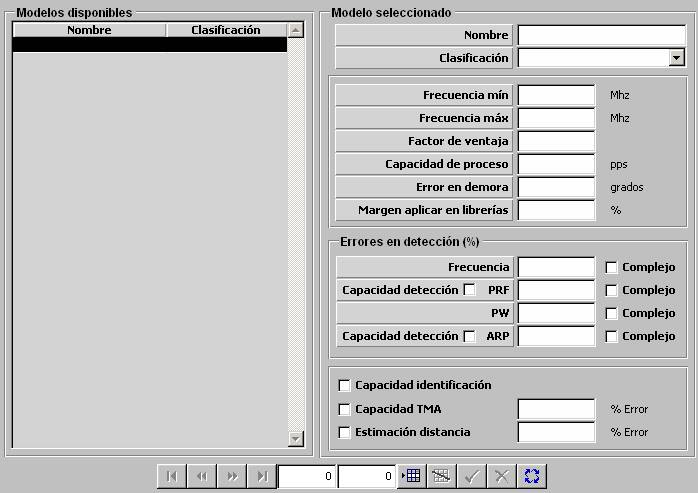

ESM

Descripción de los parámetros:
Frecuencia Mínima: Este parámetro determina el límite inferior del rango de frecuencias en el que el modelo de ESM evalúa emisiones y perturbaciones para determinar si son detectadas. El modelo de ESM no detecta emisiones de Radar, TACAN o IFF ni interferencias por debajo de esta frecuencia.
Unidades: MHz
Rango: 0 – 99999
Frecuencia Máxima: Este parámetro determina el límite superior del rango de frecuencias en el que el modelo de ESM evalúa emisiones y perturbaciones para determinar si son detectadas. El modelo de ESM no detecta emisiones de Radar, TACAN o IFF ni interferencias por encima de esta frecuencia.
Unidades: MHz
Rango: 0 – 99999
Capacidad de Proceso: Este parámetro determina la máxima capacidad de proceso del equipo ESM. Es tenido en cuenta junto con la densidad electromagnética de la zona meteorológica en la que se encuentre para determinar la cantidad máxima de emisiones que puede procesar.
Unidades: pps
Rango: 0 – 9999999
Factor de Ventaja: Este parámetro es tenido en cuenta por el modelo de ESM para calcular su alcance. El alcance al que el modelo de ESM puede detectar una emisión de un sensor (Radar, TACAN o IFF) es el alcance de dicho sensor multiplicado por este factor.
Unidades: ---
Rango: 0 – 1,999
Ejemplo:
Si Factor de Ventaja = 0 ⇒ No detecta emisiones del sensor.
Si Factor de Ventaja @ 1 ⇒ Alcance ESM @ Alcance del sensor.
Si Factor de Ventaja @ 2 ⇒ Alcance ESM es doble del alcance del sensor.
Error en Demora: Este parámetro modela el error con el que el modelo de ESM obtiene la demora de las emisiones detectadas. Dicho error se calcula para cada detección como un valor aleatorio entre –error y error, siendo “error” el valor asignado a este parámetro.
Unidades: grados
Rango: 0 – 90
Margen a Aplicar en Librerías: Este parámetro es el margen con el que se comparan los valores de Frecuencia, PRF, ARP y PW de las detecciones obtenidas por el modelo de ESM con los de Librería (sensores Radar de la BD), obteniendo así una lista de sensores con un valor de FIT de 1 a 4.
Unidades: %
Rango: 0 – 99
Errores en Detección (%):
Errores en Detección (%) Frecuencia: Este parámetro modela el error máximo con el que el modelo de ESM obtiene la frecuencia de las emisiones detectadas.
Unidades: %
Rango: 0 – 100
Capacidad de Complejo para Frecuencia: Determina si el ESM tiene capacidad de obtener tanto el dato de frecuencia como la propia capacidad compleja del radar (Frecuencia Ágil) si el radar está haciendo uso de esta capacidad.
Capacidad de Detección PRF: Determina si el ESM tiene capacidad de obtener el PRF de las emisiones detectadas.
Errores en Detección (%) PRF: Este parámetro modela el error máximo con el que el modelo de ESM obtiene el PRF de las emisiones detectadas. Este parámetro sólo puede ser introducido si se ha seleccionado Capacidad de Detección de PRF.
Unidades: %
Rango: 0 – 100
Capacidad de Complejo para PRF: Determina si el ESM tiene capacidad de obtener tanto el dato de PRF como la propia capacidad compleja del radar (PRF compleja) si el radar está haciendo uso de esta capacidad. Este parámetro sólo puede ser introducido si se ha seleccionado Capacidad de Detección de PRF.
Errores en Detección (%) PW: Este parámetro modela el error máximo con el que el modelo de ESM obtiene el PW de las emisiones detectadas.
Unidades: %
Rango: 0 – 100
Capacidad de Complejo para PW: Determina si el ESM tiene capacidad de obtener tanto el dato de PW como la propia capacidad compleja del radar (Modulación Intrapulso) si el radar está haciendo uso de esta capacidad.
Capacidad de Detección ARP: Determina si el ESM tiene capacidad de obtener el ARP de las emisiones detectadas.
Errores en Detección (%) ARP: Este parámetro modela el error máximo con el que el modelo de ESM obtiene el ARP de las emisiones detectadas. Este parámetro sólo puede ser introducido si se ha seleccionado Capacidad de Detección de ARP.
Unidades: %
Rango: 0 – 100
Capacidad de Complejo para ARP: Determina si el ESM tiene capacidad de obtener tanto el dato de ARP como la propia capacidad compleja del radar (tipo de ARP) si el radar está haciendo uso de esta capacidad. Este parámetro sólo puede ser introducido si se ha seleccionado Capacidad de Detección de ARP.
Capacidad Identificación: Determina si le ESM tiene capacidad de elaborar librería de emisiones para identificar las detecciones.
Capacidad TMA: Determina si el ESM además de obtener la demora de las emisiones detectadas, tiene capacidad de estimar los valores de rumbo, velocidad y distancia de la fuente de emisión, de forma instantánea y normalmente con menor error (según el valor de Error introducido para TMA).
Error (%): Este parámetro modela el error máximo con el que el modelo de ESM obtiene inicialmente los valores de rumbo, velocidad, demora y distancia de las emisiones detectadas. Este error va decreciendo con el tiempo mientras el ESM mantenga la detección. Este parámetro sólo puede ser introducido si se ha seleccionado Capacidad TMA.
Unidades: %
Rango: 0 – 100
Capacidad de Estimación Distancia: Determina si el ESM tiene capacidad de estimar la distancia de las emisiones detectadas.
Error (%): Este parámetro modela el error máximo con el que el modelo de ESM obtiene inicialmente la distancia de las emisiones detectadas. Este error va decreciendo con el tiempo mientras el ESM mantenga la detección. Este parámetro sólo puede ser introducido si se ha seleccionado Capacidad de Estimación Distancia.
Unidades: %
Rango: 0 – 100